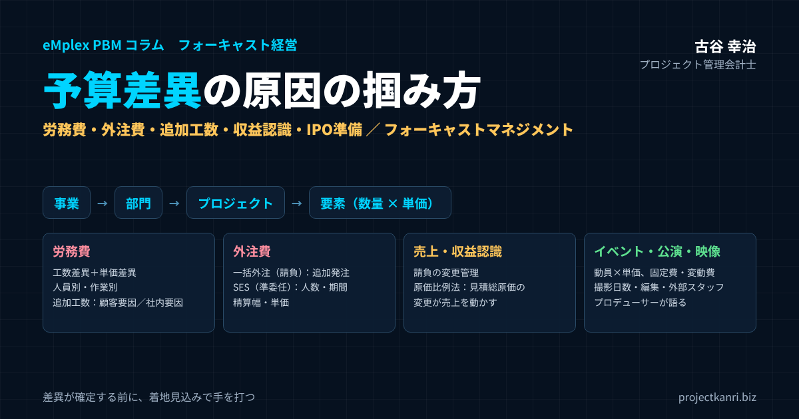

予算差異の原因の掴み方―事業・部門・プロジェクトへのドリルダウン、労務費（人員別・工数別）、外注費（一括外注・SES）、請負と追加工数、収益認識基準、イベント・公演・映像制作とプロデューサー、IPO準備の予実管理まで。フォーキャストマネジメントの実践

結論：予算差異は「分解の深さ」と「手を打てる人」で掴む
この記事の要点
- 種類：差異を「時期」「金額」「構成」に分け、経営は金額と着地への影響に集中
- 階層：事業 → 部門 → プロジェクト → 要素（売上・労務費・外注費・経費）
- 労務費：工数差異＋単価差異。人員別・作業別に掘り下げ、追加工数は顧客要因と社内要因に
- 外注費：一括外注（請負）は追加発注、SES（準委任）は人数・期間・精算幅・単価
- 収益認識：原価比例法では見積総原価の変更が売上を動かす
- 先回り：着地見込みと予算の差を毎月更新するフォーキャストマネジメント
プロジェクト管理会計士の古谷です。ご支援先の経営会議に参加すると、予算と実績の差異が毎月報告されているのに、何も変わらないという場面によく出会います。「今月は売上が予算を500万円下回りました」「原価が予算を超過しました」。報告はされても、なぜそうなったのか、誰が何をすればよいのかが分からないまま、議題は次に進んでいきます。
差異の報告が報告で終わってしまう理由は、差異の分解が浅いことにあります。会社全体で売上が500万円足りない、という数字は事実ですが、それだけでは誰も手を打てません。どの事業の、どの部門の、どのプロジェクトで、売上と原価のどの要素が、なぜ予算と違ったのか。そこまで分解して初めて、責任者が具体的な打ち手を考えられるようになります。
本記事でお伝えしたい結論は三つです。第一に、差異は、事業、部門、プロジェクトの順に、責任者が手を打てる単位までドリルダウンすること。第二に、プロジェクトの差異は、売上、労務費、外注費、経費の要素ごとに、さらに数量の差と単価の差に分解すること。第三に、終わった月の差異を説明するだけでなく、着地の見込みと予算の差を毎月更新し、差異が確定する前に手を打つこと。これが、私がフォーキャストマネジメントと呼んでいる経営の進め方です。
なぜ予算差異の分析は「報告」で終わってしまうのか
予算差異の分析が経営の役に立たない会社には、いくつかの共通点があります。
| 共通点 | 起きること |
|---|---|
| 合計の数字でしか見ない | プラスとマイナスが相殺され、問題のプロジェクトが隠れる |
| 勘定科目の単位で説明する | なぜ増えたのかが分からず、打ち手が出ない |
| 経理部門が説明を書く | 現場の原因が反映されない |
| 終わった月の差異しか見ない | もう変えられない過去の説明で終わる |
一つ目は、差異を合計の数字でしか見ていないことです。会社全体の売上や利益の差異は、多くのプラスとマイナスが相殺された結果です。あるプロジェクトの大きな赤字が、別のプロジェクトの好調で隠れていることもあります。合計の差異が小さいからといって、問題がないとは限りません。
二つ目は、差異の原因を、勘定科目の単位でしか説明していないことです。「外注費が予算を200万円超過しました」という説明は、会計の事実を述べているだけで、なぜ外注費が増えたのかは分かりません。追加の発注があったのか、単価が上がったのか、社内の人員が足りずに外注に切り替えたのか。原因によって、打つべき手はまったく違います。
三つ目は、差異の説明を経理部門が書いていることです。経理部門は数字の変化を把握できますが、現場で何が起きたのかは分かりません。差異の原因を知っているのは、事業の責任者であり、プロジェクトマネージャーであり、プロデューサーです。差異の説明は、数字に責任を持つ人が書くべきです。
四つ目は、終わった月の差異しか見ていないことです。先月の実績が予算と違った理由を説明しても、先月はもう変えられません。経営にとって本当に大切なのは、このままいくと期末にどれだけの差が出るのか、そしてそれを埋めるために今何をするのか、という未来の話です。
三つの数字と差異の種類：予算・実績・着地見込み
差異の原因を掴む前提として、比べる数字と、差異の種類を整理しておきましょう。プロジェクト型ビジネスで扱う数字は、予算、実績、着地見込みの三つです。
| 数字 | 意味 | 比べると分かること |
|---|---|---|
| 予算 | 期首・プロジェクト開始時の計画 | — |
| 実績 | すでに発生し記録された数字 | 予算との差＝過去の差異 |
| 着地見込み | 実績＋これからの見込み | 予算との差＝未来の差異（手を打てる差異） |
予算は、期首やプロジェクトの開始時に決めた計画です。実績は、すでに発生し、会計に記録された数字です。着地見込みは、実績に、これから発生する見込みを加えた、期末やプロジェクトの完了時点の予想です。予算と実績の差は過去の差異、予算と着地見込みの差は未来の差異と言い換えることができます。
そして、差異にはいくつかの種類があります。私は、まず次の三つに分けて考えることをお勧めしています。
| 種類 | 例 | 経営の向き合い方 |
|---|---|---|
| 時期の差異 | 検収が翌月にずれた、請求が遅れた | 累計・着地で解消を確認。深追いしない |
| 金額の差異 | 追加工数で原価増、値引きで売上減 | 原因と打ち手を議論する中心 |
| 構成の差異 | 高単価の人の比率増、低粗利案件の売上増 | 人の配置・受注の方針を見直す |
時期の差異は、売上や原価の発生の時期が予算とずれただけで、最終的な金額は変わらないものです。検収が翌月にずれた、外注先の請求が遅れた、といったものです。時期の差異は、単月で見ると大きく見えても、累計や着地では解消されます。金額の差異は、最終的な金額そのものが予算と違うものです。追加の工数で原価が増えた、値引きで売上が減った、といったものです。構成の差異は、全体の金額は同じでも、中身の組み合わせが予算と違うものです。高い単価の人が多く関わった、粗利率の低い案件の売上が増えた、といったものです。
差異を見たとき、まずそれが時期の差異なのか、金額の差異なのかを区別するだけで、議論の質は大きく変わります。時期の差異に経営が時間を使う必要はありません。経営が向き合うべきなのは、金額の差異と、着地見込みに影響する差異です。
時期の差異をどう扱うか
時期の差異は、深追いする必要はないと書きましたが、放置してよいわけではありません。時期の差異には、二つの注意点があります。
一つ目は、時期の差異が、実は金額の差異の前触れであることがある点です。検収が一か月ずれたという報告が、二か月、三か月と続く場合、その背景には、プロジェクトの遅れや、顧客との認識のずれがあるかもしれません。時期の差異が続いているプロジェクトは、着地見込みの金額を改めて確認しましょう。
二つ目は、期末をまたぐ時期の差異です。月次では時期の差異でも、検収が期末を越えて翌期にずれれば、今期の売上と利益は確実に減ります。上場企業であれば、業績の予想にも影響します。期末の近くでは、検収の予定と、その確度を、プロジェクトごとに一覧で確認しておくことが大切です。
時期の差異を経営会議で扱うときは、単月の差異ではなく、累計の差異と着地見込みで見ることをお勧めします。単月で大きなマイナスでも、累計や着地で解消されているなら、議論に時間を使う必要はありません。
差異分析の階層：事業から部門、プロジェクトへドリルダウンする
差異の原因を掴む基本は、大きな単位から小さな単位へ、順に掘り下げていくことです。私は、事業、部門、プロジェクトの三つの階層でドリルダウンすることをお勧めしています。
| 階層 | 見ること | 責任者 |
|---|---|---|
| 全社 | 売上・粗利・営業利益の差異 | 経営 |
| 事業 | どの事業で、売上と粗利のどちらがずれたか | 事業責任者 |
| 部門 | 稼働率、未稼働コスト、部門の費用 | 部門長 |
| プロジェクト | 売上・労務費・外注費・経費の差異 | PM・プロデューサー |
| 要素 | 工数×単価、人員別・作業別、追加工数の原因 | PM・プロデューサー |
最初に、会社全体の差異を事業ごとに分けます。どの事業が予算を上回り、どの事業が下回っているのかを確認します。次に、差異の大きい事業について、部門ごとに分けます。最後に、差異の大きい部門について、プロジェクトごとに分けます。そして、プロジェクトの差異を、売上と原価の要素ごとに分解します。
このとき大切なのは、すべての事業、すべての部門、すべてのプロジェクトを同じ深さで分析しないことです。経営会議の時間は限られています。差異の金額が大きいもの、着地見込みへの影響が大きいものから順に、深く掘り下げます。私は、プロジェクトの一覧を、予算との差異の金額が大きい順、あるいは着地見込みの粗利率が予算から大きく下がった順に並べることをお勧めしています。上位の数件を見れば、全体の差異の大半が説明できることが多いからです。
ドリルダウンを可能にするには、予算と実績が、事業、部門、プロジェクトのそれぞれの単位で記録されている必要があります。予算を全社や部門の単位でしか作っていない会社では、プロジェクトの単位まで掘り下げることができません。差異の分析の深さは、予算の作り方の深さで決まるのです。
差異の全体像を一枚にする：差異のツリー
ドリルダウンの考え方を、一枚の図や表にまとめておくと、経営会議の参加者全員が同じ見方で差異を議論できます。私は、粗利の差異を頂点に、要素と原因に枝分かれさせた差異のツリーを作ることをお勧めしています。
| 階層1 | 階層2 | 階層3（原因） | 金額 |
|---|---|---|---|
| 売上 ＋200 | 変更契約 | 顧客要因の仕様変更（250時間分） | ＋200 |
| 労務費 ＋222 | 工数差異 ＋200 | 顧客要因250時間／社内要因150時間（見積漏れ・手戻り） | ＋200 |
| 単価差異 ＋22 | 高単価の人の比率の上昇 | ＋22 | |
| 外注費（一括） ＋80 | 追加発注 | 仕様変更への対応 | ＋80 |
| 外注費（SES） ＋60 | 期間延長・精算 | 6→7人月、上限超過の稼働 | ＋60 |
| 経費 ＋10 | — | 交通費・会議費など | ＋10 |
| 粗利 －172 | ＝売上の差異－原価の差異 | －172 |
このツリーの末端にある原因は、どれも責任者が具体的に手を打てるものです。仕様の変更なら変更の契約の協議、手戻りならテストの手順の見直し、人の構成なら作業の割り振りの見直し。差異をツリーの末端まで掘り下げたときに初めて、差異の分析は打ち手につながります。逆に、ツリーの途中で止まっている説明は、まだ原因に届いていないと考えてください。
事業別の差異：どの事業で、売上と粗利のどちらがずれたのか
事業別の差異では、売上の差異と粗利の差異を分けて見ることが大切です。売上が予算どおりでも粗利が足りない事業と、売上そのものが足りない事業とでは、原因も打ち手も違うからです。
売上の差異は、さらに受注の差異と、売上の計上の時期の差異に分けます。受注が予算に届いていないのであれば、営業の課題です。受注は予算どおりでも売上が足りないのであれば、プロジェクトの進み具合や検収の時期の問題です。粗利の差異は、プロジェクトの採算の悪化か、粗利率の異なる案件の構成の変化かに分けます。
| 事業 | 売上 予算／実績 | 売上差異 | 粗利 予算／実績 | 粗利差異 |
|---|---|---|---|---|
| 受託開発 | 50,000／53,000 | ＋3,000 | 15,000／13,800 | －1,200 |
| 保守運用 | 20,000／18,500 | －1,500 | 11,000／10,175 | －825 |
| コンサルティング | 10,000／10,200 | ＋200 | 4,500／4,600 | ＋100 |
| 合計 | 80,000／81,700 | ＋1,700 | 30,500／28,575 | －1,925 |
保守運用の粗利率は予算・実績とも55%。数値は説明のための例です。
この表の例では、受託開発の事業は、売上が予算を上回っているのに、粗利は予算を下回っています。売上の増加が、粗利率の低い案件や、採算の悪化した案件によってもたらされている可能性があります。一方で、保守運用の事業は、売上は予算を下回っていますが、粗利率は予算どおりです。売上の不足の原因は、契約の更新の遅れや、新規の契約の獲得の遅れにあると考えられます。
事業別の差異を見るときは、売上の総額の大小に目を奪われず、粗利と粗利率の差異に注目してください。売上が予算を上回っている事業ほど、粗利の悪化が見過ごされやすいからです。
事業別の差異を確認したら、その差異が一時的なものか、構造的なものかも見極めます。一つの大型の案件の採算の悪化による差異であれば、その案件への対応が中心になります。一方で、事業の中の多くの案件で同じように粗利率が下がっているなら、単価の水準、見積の方法、人の確保の難しさといった、事業の構造の問題を疑うべきです。
売上の差異を数量・単価・構成に分ける
事業や部門の単位で売上の差異を見るときは、数量の差異、単価の差異、構成の差異に分けると、原因が見えやすくなります。プロジェクト型ビジネスでは、数量は受注の件数や稼働の時間、単価は案件の平均の金額や時間あたりの単価にあたります。
| 差異 | プロジェクト型ビジネスでの意味 | 見ること |
|---|---|---|
| 数量の差異 | 受注件数、稼働時間 | 営業の量、稼働率 |
| 単価の差異 | 案件の平均金額、時間あたりの単価 | 値引き、単価改定、案件の規模 |
| 構成の差異 | 粗利率の異なる案件・事業の組み合わせ | セグメント別の粗利率 |
たとえば、コンサルティングの事業で、売上が予算どおりでも、件数が予算より多く、平均の金額が予算より低い場合は、小さな案件を多く受けていることになります。小さな案件は、提案や契約、請求の手間が案件の数に比例してかかるため、売上が同じでも、営業や管理の負担は増え、利益は減りがちです。
構成の差異は、粗利率の異なる案件や事業の組み合わせが予算と変わったことによる差異です。全体の売上が予算どおりでも、粗利率の低い案件の比率が高まれば、粗利は予算に届きません。事業別やセグメント別の予算を持ち、それぞれの粗利率を見ていれば、構成の差異を掴むことができます。
部門別の差異：稼働率と未稼働のコスト、部門の費用
部門別の差異では、プロジェクトに載らない費用に注目します。プロジェクトの差異はプロジェクトマネージャーの責任ですが、部門の差異は部門長の責任です。
制作や開発の部門で最も大きな部門の差異は、稼働率の差異です。部門の人件費のうち、プロジェクトに直接つけられなかった時間の人件費が、未稼働のコストとして部門に残ります。予算で想定した稼働率より実際の稼働率が低ければ、未稼働のコストが増え、部門の利益は予算を下回ります。
| 項目 | 予算 | 実績 | 差異 |
|---|---|---|---|
| 人員×所定時間 | 40人×160時間＝6,400時間 | 6,400時間 | — |
| 稼働率 | 80% | 72% | －8ポイント |
| プロジェクトにつけた工数 | 5,120時間 | 4,608時間 | －512時間 |
| 未稼働のコスト（時間単価4,500円） | 576万円 | 806万円 | ＋230万円 |
稼働率が下がる原因は、案件の受注の遅れ、案件と案件の間の待機、人の配置の偏り、社内の業務の増加などです。逆に、稼働率が予算を大きく上回っている場合も注意が必要です。一時的には利益が増えますが、過稼働の状態が続くと、品質の低下や離職につながります。
部門の差異には、ほかにも、採用の時期のずれによる人件費の差異、教育や採用の費用の差異、設備やシステムの費用の差異などがあります。部門長は、自部門の稼働率と費用の差異を、毎月自分の言葉で説明できるようにしておくべきです。
部門の差異は、プロジェクトの差異と表裏の関係にあります。プロジェクトの工数が増えれば部門の稼働率は上がり、プロジェクトの受注が遅れれば部門の稼働率は下がります。部門長とプロジェクトマネージャーが同じ数字を見て話すことが、全体の差異を正しく理解する近道です。
プロジェクト別の差異：売上・労務費・外注費・経費に分解する
いよいよ、差異の分析の中心となるプロジェクトの単位です。プロジェクトの差異は、売上、労務費、外注費、経費の要素ごとに分解します。ここからは、一つのシステム開発のプロジェクトを例に、具体的に見ていきましょう。
受注金額3,000万円の請負契約のシステム開発のプロジェクトです。実行予算では、社内の労務費を1,200万円、一括で発注する外注費を500万円、SESの外注費を300万円、経費を100万円、合計の原価を2,100万円とし、粗利900万円、粗利率30%を見込んでいました。プロジェクトの中盤で、着地見込みを更新したところ、次のようになりました。
| 要素 | 実行予算 | 着地見込み | 差異 |
|---|---|---|---|
| 売上（請負） | 3,000 | 3,200 | ＋200（変更契約） |
| 労務費（社内） | 1,200 | 1,422 | ＋222 |
| 外注費（一括） | 500 | 580 | ＋80 |
| 外注費（SES） | 300 | 360 | ＋60 |
| 経費 | 100 | 110 | ＋10 |
| 原価合計 | 2,100 | 2,472 | ＋372 |
| 粗利（粗利率） | 900（30.0%） | 728（約22.8%） | －172 |
数値は説明のための例です。
粗利は予算から172万円減り、粗利率は30%から約22.8%に下がる見込みです。売上は、顧客の要望による仕様の変更を変更契約として合意できたため、200万円増えています。一方で、原価は372万円増えています。原価の増加の内訳は、労務費が222万円、一括外注が80万円、SESが60万円、経費が10万円です。
ここまで分解すると、粗利の悪化の最大の原因が労務費であることが分かります。しかし、まだ打ち手を考えるには十分ではありません。労務費がなぜ増えたのかを、さらに分解する必要があります。
このように、プロジェクトの差異は、売上の側と原価の側の両方から見ることが大切です。売上が増えたことで、原価の増加の一部は取り戻せていますが、それでも粗利は大きく減っています。売上の増加を喜ぶだけでなく、原価の増加に見合った売上の増加だったのかを確かめる視点が必要です。この例では、原価が372万円増えたのに対し、売上の増加は200万円にとどまっています。
労務費の差異：工数差異と単価差異に分ける
労務費は、工数に時間単価を掛けたものです。したがって、労務費の差異は、工数が予算と違ったことによる差異と、時間単価が予算と違ったことによる差異に分けることができます。
| 差異 | 計算式 | 計算 | 金額 |
|---|---|---|---|
| 工数差異 | （実績工数－予算工数）×予算単価 | （2,800h－2,400h）×5,000円 | ＋200 |
| 単価差異 | （実績単価－予算単価）×実績工数 | 1,422万円－2,800h×5,000円 | ＋22 |
| 労務費の差異 | 工数差異＋単価差異 | ＋222 |
先ほどのプロジェクトでは、予算の工数は2,400時間、予算の平均の時間単価は5,000円でした。着地見込みでは、工数は2,800時間に増え、労務費は1,422万円になる見込みです。工数差異は、増えた400時間に予算の単価5,000円を掛けた200万円です。残りの22万円は、単価差異、つまり、時間単価の高い人の工数の比率が予算より高くなったことによる差異です。
この分解から、労務費の増加の大半は、工数そのものの増加によるものだと分かります。工数がなぜ400時間も増えたのか。ここが、差異の原因を掴むための核心です。
単価差異についても、見過ごさないことが大切です。この例では金額は小さいものの、時間単価の高いプロジェクトマネージャーや上級の技術者が、本来は若手が担う作業を肩代わりしていると、単価差異が大きくなります。単価差異が大きいときは、人の配置が予算の想定どおりになっているかを確認しましょう。
時間単価をどう決めるかで差異の見え方が変わる
労務費の差異を分析するには、時間単価の決め方を理解しておく必要があります。時間単価には、一人ひとりの実際の人件費から計算する方法と、役割や等級ごとに標準の単価を決める方法があります。
一人ひとりの実際の人件費から計算する方法は、原価の正確さでは優れていますが、給与の情報が見えてしまうことや、計算の手間が課題になります。役割や等級ごとの標準の単価を使う方法は、運用が簡単で、プロジェクトの間の比較もしやすくなります。多くの会社では、標準の単価を使い、標準の単価と実際の人件費の差は、部門の差異として扱っています。
標準の単価を使う場合、単価差異は、主に人の構成の変化から生まれます。予算で想定した役割の組み合わせと、実際に関わった人の役割の組み合わせが違えば、平均の単価が変わります。この差異を見ることで、プロジェクトマネージャーは、人の配置が予算の想定どおりになっているかを確認できます。
人員別・工数別に見る：誰の、どの作業の工数が増えたのか
工数差異の原因を掴むには、人員別と、作業別の二つの切り口で分解します。
| 役割（時間単価） | 予算工数 | 着地工数 | 工数差異 | 労務費への影響 |
|---|---|---|---|---|
| PM（8,000円） | 300 | 380 | ＋80 | ＋64 |
| SE（5,000円） | 1,200 | 1,500 | ＋300 | ＋150 |
| プログラマー（4,000円） | 900 | 920 | ＋20 | ＋8 |
| 合計 | 2,400 | 2,800 | ＋400 | ＋222 |
人員別に見ると、プロジェクトマネージャーの工数が80時間、SEの工数が300時間、プログラマーの工数が20時間増える見込みです。労務費への影響は、プロジェクトマネージャーが64万円、SEが150万円、プログラマーが8万円で、合計の222万円と一致します。SEの工数の増加が、差異の大半を占めていることが分かります。
次に、作業別、つまり工程や作業の種類ごとに工数を見ます。要件定義、設計、開発、テスト、プロジェクト管理といった工程ごとに、予算と実績を比べます。SEの工数の増加が、設計の工程に集中しているのか、テストの工程での手戻りによるものなのかで、原因は大きく違います。
人員別と作業別の分解を可能にするのが、タイムシートです。社員が、どのプロジェクトの、どの作業に、何時間使ったのかを記録していなければ、工数の差異をこの深さで分解することはできません。タイムシートの入力の項目に、プロジェクトだけでなく作業の区分を含めておくことが、差異の原因を掴むための土台になります。
そして、人員別の分解には、もう一つの意味があります。特定の人に工数が集中しているなら、その人が過稼働になり、他のプロジェクトにも影響が出ている可能性があります。差異の分析は、プロジェクトの採算だけでなく、人の負担の偏りを見つける手段でもあるのです。
人員別の分解の結果を見るときは、数字だけで判断せず、本人や関係者から事情を聞くことも大切です。工数の増加の背景には、顧客との調整の難しさや、技術的な課題、他のプロジェクトからの割り込みなど、数字には表れない事情があることが多いからです。
追加工数の正体を見極める：顧客要因か、社内要因か
工数の増加、つまり追加工数の原因を見極めることは、プロジェクトの差異の分析で最も重要な作業です。私は、追加工数を、顧客の要因によるものと、社内の要因によるものに分けて記録することをお勧めしています。
| 区分 | 主な原因 | 工数 | 扱い |
|---|---|---|---|
| 顧客要因 | 仕様の変更・追加の要望 | 250時間 | 変更契約で200万円を合意 |
| 社内要因 | 見積の漏れ・テストでの手戻り | 150時間 | 請求不可。原因を記録し次の見積へ |
先ほどのプロジェクトの400時間の追加工数を調べたところ、250時間は顧客の要望による仕様の変更、150時間は社内の見積の漏れと、テストでの手戻りによるものでした。顧客の要因による250時間は、顧客と協議し、変更契約として200万円の追加の売上を合意できました。社内の要因による150時間は、請求することはできず、そのまま粗利の悪化になります。
顧客の要因による追加工数は、請求できる可能性があります。ただし、それには、仕様の変更の要望があった時点で記録し、追加の費用と期間への影響を顧客に伝え、合意を得るという手順が必要です。作業を進めてから後で請求しようとしても、顧客の合意を得るのは難しくなります。
社内の要因による追加工数は、請求できませんが、次のプロジェクトの見積に活かすことができます。どの工程で、どのような見積の漏れがあったのか、なぜ手戻りが起きたのかを記録しておけば、次の見積の精度が上がり、同じ差異の繰り返しを防げます。追加工数の記録は、今のプロジェクトの採算を守るためだけでなく、会社の見積の力を育てるための資産なのです。
追加工数の記録は、記録する手間を最小限にする工夫も大切です。タイムシートの作業の区分に「仕様変更対応」「手戻り対応」といった項目を設けておけば、日々の工数の入力だけで、追加工数の原因を自然に集計できるようになります。
外注費の差異：一括外注とSESで見るべき点が違う
外注費の差異は、外注の契約の形によって、原因の見方が大きく変わります。プロジェクト型ビジネスでよく使われるのは、成果物の完成を約束してもらう一括の外注と、技術者の作業の時間を提供してもらうSESの二つです。
| 観点 | 一括外注（一般に請負） | SES（一般に準委任） |
|---|---|---|
| 支払いの対象 | 成果物の完成 | 作業の時間・期間 |
| 差異の主な原因 | 追加発注、仕様変更による契約変更 | 人数・期間の延長、精算幅を超えた稼働、単価 |
| 管理のポイント | 発注額と追加発注の履歴、原因の区別 | 稼働時間を作業別に把握、延長の判断 |
| 例（本記事） | 追加発注で＋80万円 | 6→7人月で＋50万円、精算で＋10万円 |
一括の外注は、一般に請負の契約で、決まった成果物に対して決まった金額を支払います。外注先の作業の時間が増えても、原則として支払う金額は変わりません。したがって、一括の外注の差異は、主に追加の発注や、仕様の変更による契約の金額の変更から生まれます。先ほどのプロジェクトでも、一括の外注の80万円の増加は、仕様の変更に伴う追加の発注によるものでした。
一括の外注の差異を管理するには、発注の金額と、追加の発注の履歴を、プロジェクトごとに記録しておくことが大切です。追加の発注が、顧客からの仕様の変更に対応するためのものなのか、自社の設計の不備を補うためのものなのかを区別しておけば、売上の側で回収できるかどうかの判断にもつながります。
SESは、一般に準委任の契約で、技術者の作業の時間に対して費用を支払います。月ごとの単価に加えて、稼働の時間の上限と下限、いわゆる精算の幅を定め、それを超えた時間や下回った時間を精算する形が一般的です。したがって、SESの差異は、人数と期間の差異、つまり何人を何か月使ったか、と、精算の幅を超えた稼働の時間の差異、そして単価の差異に分けて見ます。
先ほどのプロジェクトでは、SESを予算の6人月から7人月に延長したことで50万円、精算の幅を超えた稼働で10万円、合計で60万円の差異が出ています。SESの差異は、社内の工数の差異と同じ性質を持っています。作業が予定より長引けば、そのまま費用が増えるからです。SESの稼働の時間も、社内の工数と同じように、作業別に把握しておくことをお勧めします。
なお、SESの技術者に、自社の社員が直接作業の指示を出すと、契約の形によっては、いわゆる偽装請負の問題が生じるおそれがあります。外注の契約の形と、実際の指示の出し方が一致しているかは、法務の観点からも確認しておきましょう。
SESの精算の差異を計算してみる
SESの精算の仕組みを、数値で確認しておきましょう。月の単価が50万円、精算の幅が140時間から180時間の契約で、ある月の稼働が200時間だったとします。
| 項目 | 内容 |
|---|---|
| 月の単価 | 50万円 |
| 精算の幅 | 140時間〜180時間 |
| 実際の稼働 | 200時間（上限を20時間超過） |
| 超過の単価 | 50万円÷180時間＝約2,778円 |
| 超過の金額 | 20時間×約2,778円＝約5.6万円 |
| この月の支払い | 約55.6万円 |
超過・控除の単価の計算方法は契約により異なります。
上限の180時間を20時間超えたため、超過の時間に、単価を上限の時間で割った超過の単価を掛けた金額が加算されます。この例では、単価50万円を180時間で割った約2,778円が超過の時間あたりの単価となり、20時間分で約5.6万円が追加になります。超過の単価の計算の方法は契約によって異なるため、自社の契約の条件を確認してください。
精算の差異は、一か月あたりでは小さく見えても、複数の技術者が数か月にわたって上限を超え続けると、無視できない金額になります。そして、上限を超えた稼働が続いているということは、作業の量が見積を超えているという兆しでもあります。SESの稼働の時間は、費用の差異としてだけでなく、プロジェクトの進み具合の兆しとして見ることが大切です。
請負契約の売上の差異：変更管理が粗利を守る
受注の側の請負の契約では、決まった成果物を決まった金額で納めることを約束します。工数が増えても、原則として売上は増えません。だからこそ、請負の契約のプロジェクトでは、追加工数がそのまま粗利の悪化につながります。
売上の差異の原因として最も多いのは、仕様の変更や追加の要望を、契約の変更として合意しないまま作業を進めてしまうことです。現場は顧客の要望に応えようとし、追加の作業を引き受けます。しかし、追加の金額の合意が後回しになり、最終的に請求できない、あるいは十分な金額を請求できないまま、プロジェクトが終わってしまいます。
| 手順 | 内容 |
|---|---|
| 1. 記録 | 変更・追加の要望を日付・依頼者とともに記録 |
| 2. 見積 | 工数・費用・期間への影響を見積もる |
| 3. 合意 | 顧客と金額・納期の変更を合意してから着手 |
| 4. 反映 | 変更契約を実行予算と着地見込みに反映 |
| 5. 確認 | 未合意の変更の一覧を定期的に確認 |
変更の管理の基本は、変更の要望があった時点で記録し、工数と費用、期間への影響を見積もり、顧客と合意してから作業に入ることです。小さな変更を積み重ねると、大きな追加工数になります。小さな変更も一覧で管理し、一定の量がたまった時点でまとめて協議する方法も有効です。
売上の差異のもう一つの原因は、値引きです。受注の後に、顧客から値引きを求められることもあれば、品質の問題や納期の遅れの補償として値引きに応じることもあります。値引きの差異は、プロジェクトの差異として記録するだけでなく、その原因が営業の段階にあるのか、プロジェクトの遂行の段階にあるのかを区別しておきましょう。
変更の要望を記録する習慣は、顧客との関係を損なうものではありません。むしろ、変更の影響を早めに共有することで、顧客も予算や納期の判断がしやすくなり、顧客との信頼関係はむしろ深まっていきます。
収益認識基準と差異：見積総原価の変更が売上を動かす
プロジェクト型ビジネスの差異の分析で見落とされやすいのが、収益認識の基準の影響です。日本では、企業会計基準第29号「収益認識に関する会計基準」が、上場企業などで2021年4月以降に開始する事業年度から適用されています。
この基準のもとで、一定の期間にわたって履行義務が充足されると判断されるプロジェクトは、その進捗の度合いに応じて売上を計上します。プロジェクト型ビジネスでよく使われるのは、発生した原価を見積の総原価で割って進捗の度合いを測る、いわゆる原価比例法です。
原価比例法では、見積の総原価が変わると、売上が変わります。先ほどのプロジェクトで考えてみましょう。
| 項目 | 当初 | 見直し後 |
|---|---|---|
| 売上（契約金額） | 3,000 | 3,200 |
| 見積総原価 | 2,100 | 2,472 |
| 発生原価（累計） | 1,050 | 1,050 |
| 進捗度 | 50.0% | 約42.5% |
| 累計の売上 | 1,500 | 約1,359 |
見直しによる累計売上の差は、見積を変更した期に修正されます。
当初の見積の総原価2,100万円のもとで、発生した原価が1,050万円であれば、進捗度は50%で、売上は1,500万円を計上します。ところが、着地見込みの更新で見積の総原価が2,472万円に増え、売上の見込みも3,200万円に増えたとします。同じ1,050万円の発生原価でも、進捗度は約42.5%に下がり、累計の売上は約1,359万円になります。すでに計上した売上との差は、見積を変更した期に修正されます。
つまり、原価比例法を使っているプロジェクトでは、原価の差異が、売上の差異も引き起こします。売上の差異の原因が営業でも検収でもなく、見積の総原価の変更にあることがあるのです。この仕組みを理解していないと、売上の差異の説明を誤ります。
さらに、着地見込みの原価が売上を上回る、つまりプロジェクトが赤字になると見込まれる場合は、受注損失引当金の計上が必要になることがあります。見積の総原価の精度は、月次の差異の分析だけでなく、決算の数字そのものを左右するのです。会計の処理の詳細は、監査法人や会計の専門家に確認してください。
利益の差異は、資金の差異にもつながる
差異の分析は、損益だけで終わらせず、資金への影響も確認しましょう。プロジェクトの原価が増えれば、その分の支払いが増えます。追加の外注の発注は、数か月後の支払いになります。一方で、変更の契約で増えた売上は、請求と入金の条件によっては、入金がプロジェクトの完了の後になることもあります。
つまり、原価の増加は早く資金を減らし、売上の増加は遅れて資金を増やすことが多いのです。大型のプロジェクトで原価が大きく増える見込みになったときは、全社の資金繰りの見通しにも反映させてください。損益の差異は小さくても、支払いと入金の時期のずれで、一時的に資金が不足することがあります。
プロジェクトの単位で、損益の着地見込みとあわせて、入金と支払いの見込みも更新しておけば、資金の差異にも先回りできます。プロジェクト型ビジネスでは、黒字のプロジェクトが資金を圧迫することも珍しくありません。差異の分析を、資金の安全を守るためにも使ってください。
フォーキャストマネジメント：差異が確定する前に手を打つ
ここまで、差異を分解する方法を見てきました。しかし、差異の分析の本当の目的は、終わったことを説明することではなく、これからの差異を小さくすることです。そのための考え方が、フォーキャストマネジメントです。
フォーキャストマネジメントでは、毎月、プロジェクトごとに着地見込みを更新し、予算と着地見込みの差を確認します。先ほどのプロジェクトで言えば、プロジェクトの中盤で、粗利が予算から172万円減る見込みだと分かった時点が、手を打つ機会です。
| 差異の原因 | 打てる手 |
|---|---|
| 社内要因の手戻り | テスト手順の見直し、レビューの強化 |
| SESの延長 | 延長期間の見直し、社内要員への切り替え |
| 残りの仕様変更 | 早めの協議と変更契約 |
| 高単価の人の作業 | 作業の割り振りの見直し |
この時点であれば、まだ打てる手があります。社内の要因の手戻りの原因を取り除き、残りの工程の工数を抑える。SESの延長の期間を見直す。残りの仕様の変更の要望について、早めに顧客と協議する。プロジェクトが終わってから差異を説明しても、これらの手はもう打てません。
着地見込みの更新で大切なのは、楽観的な見込みを置かないことです。「残りの工程でなんとか取り戻します」という見込みは、根拠がなければ、たいてい外れます。残りの工程の工数は、これまでの実績のペースから見積もり直します。そのうえで、取り戻すための具体的な施策があれば、その効果を別に示します。見込みと施策を分けて示すことで、経営は施策の実行を確認できるようになります。
着地見込みの差異も、予算の差異と同じように、事業、部門、プロジェクトの順にドリルダウンし、要素ごとに分解します。毎月の経営会議の議論の中心を、過去の実績の差異から、未来の着地見込みの差異に移すこと。それが、予算差異の分析を経営の力に変える最も確実な方法です。
先行指標で差異の兆しを掴む
差異が数字として表れる前に、その兆しを掴むことができれば、さらに早く手を打てます。そのために役立つのが、先行指標です。
| 指標 | 兆しとなる差異 |
|---|---|
| 受注残・パイプライン金額 | 数か月後の売上の差異 |
| 稼働率 | 部門の未稼働コストの差異 |
| 工数の消化率と成果物の完成率の差 | プロジェクトの労務費の差異 |
| 変更要望の件数・未合意の金額 | 追加工数と請求漏れ |
| チケット・申込の販売進捗 | イベント・公演の売上の差異 |
受注の残高やパイプラインの金額は、数か月後の売上の差異の兆しです。稼働率は、部門の差異の兆しです。プロジェクトの単位では、工程ごとの工数の消化の割合と、成果物の完成の割合を比べることが有効です。工数を予算の六割使ったのに、成果物は四割しかできていないなら、着地の工数は予算を大きく超えることが予想されます。
変更の要望の件数も、重要な先行指標です。変更の要望が増えているプロジェクトは、追加工数が増え、粗利が悪化する可能性が高まっています。未合意の変更の件数と、その見込みの金額を毎月確認しておけば、請求の漏れも防げます。
イベント・公演の予算差異：動員と単価、固定費と変動費
ここまでシステム開発のプロジェクトを例にしてきましたが、差異の考え方は、業種が変わっても同じです。ここでは、イベントや公演のプロジェクトで、差異の原因をどう掴むかを見てみましょう。
イベントや公演の売上の多くは、チケットの売上です。チケットの売上は、動員の人数と、平均の単価の掛け算です。したがって、売上の差異は、動員の差異と、単価の差異に分けることができます。
| 項目 | 予算 | 実績 | 差異 |
|---|---|---|---|
| 動員 | 8,000人 | 7,200人 | －800人 |
| 平均単価 | 7,500円 | 7,800円 | ＋300円 |
| チケット売上 | 6,000 | 5,616 | －384 |
| うち動員差異 | （7,200－8,000）×7,500円 | －600 | |
| うち単価差異 | （7,800－7,500）×7,200人 | ＋216 |
この例では、売上は予算を384万円下回っています。分解すると、動員が800人少なかったことによる差異が600万円のマイナス、平均の単価が上がったことによる差異が216万円のプラスです。単価が上がったのは、席種の構成で高い席の比率が高かったためかもしれませんし、割引の販売が少なかったためかもしれません。動員の差異は、宣伝の効果、競合する催しの有無、天候などの要因を確認します。
費用の側では、固定費と変動費を分けて見ることが大切です。会場の費用、出演の料金、舞台の制作の費用などは、動員にかかわらず発生する固定費です。一方で、チケットの販売の手数料や、来場者の数に応じた運営の人件費などは、動員に応じて変わる変動費です。動員が予算を下回ったとき、変動費は自然に減りますが、固定費は減りません。したがって、動員の差異は、売上の差異よりも大きな利益の差異を生むことがあります。
| 区分 | 主な費用 | 動員が減ったとき |
|---|---|---|
| 固定費 | 会場費、出演料、舞台制作費、宣伝費の基本部分 | 減らない |
| 変動費 | 販売手数料、来場者数に応じた運営人件費、物販原価 | 自然に減る |
公演の予算の管理で特に重要なのは、損益分岐点の動員を把握しておくことです。固定費をまかなうために何人の動員が必要なのかを、予算の段階で計算しておけば、販売の途中の段階で、損益分岐点に届くかどうかを判断できます。販売の進み具合が予算を下回っているなら、追加の宣伝や販売の施策を、公演の前に打つことができます。
中止や延期のリスクも、イベントや公演に特有のものです。天候や災害、出演者の事情などで中止になった場合、どの費用が発生し、どの費用が保険や契約でまかなわれるのかを、予算の段階で整理しておくことをお勧めします。
チケットの販売では、販売の開始からの日数ごとの販売の枚数を、過去の公演の実績と比べることも有効です。過去の公演の販売の進み方の曲線と比べれば、現時点の販売の枚数から、最終的な動員をある程度予想できます。
映像制作の予算差異：撮影日数・編集・外部スタッフ
映像制作のプロジェクトも、典型的なプロジェクト型ビジネスです。私自身、芸能プロダクションで経営企画の責任者を務めた経験から、制作の現場の予算の管理の難しさを身近に見てきました。
映像制作の予算の差異の多くは、撮影、編集、外部のスタッフの三つから生まれます。
| 領域 | 差異の原因 | 見方・対策 |
|---|---|---|
| 撮影 | 天候・日程変更・追加撮影による日数増 | 撮影1日あたりの費用を把握 |
| 編集 | クライアントの修正の回数 | 修正回数の上限と追加費用を契約で決める |
| 外部スタッフ | 稼働日数・人数・単価 | SESと同様に人数×日数×単価で分解 |
| 権利 | 音楽・肖像・素材の使用範囲や期間の変更 | 予算に項目を立て、変更を早く把握 |
撮影の差異は、撮影の日数の差異として現れることが多くあります。天候による撮影の延期、出演者の都合による日程の変更、追加の撮影などで撮影の日数が増えると、機材、スタジオ、ロケの費用、スタッフの日当などが、日数に比例して増えます。撮影の一日あたりの費用を予算の段階で把握しておけば、撮影の日数が一日延びたときの影響をすぐに計算できます。
編集の差異は、修正の回数の差異として現れることが多くあります。クライアントの確認のたびに修正の要望が出て、編集の作業が増える。この構造は、システム開発の仕様の変更とよく似ています。契約の段階で、修正の回数の上限や、上限を超えた場合の追加の費用を決めておくことが、編集の差異を抑える鍵です。
外部のスタッフの差異は、日当や時間あたりの単価で契約するスタッフの稼働の日数の差異です。SESと同じように、人数と日数と単価に分けて見ます。映像制作では、プロジェクトの多くの部分を外部のスタッフや制作会社に依頼することが多く、外部の費用の差異の管理が、プロジェクトの採算を大きく左右します。
映像制作のもう一つの特徴は、権利の処理の費用です。音楽、出演者の肖像、素材の使用などの権利の費用が、後から追加で発生することがあります。使用の範囲や期間が当初の想定と変わると、費用も変わります。権利の費用は、予算の段階で項目を立てておき、変更があれば早めに把握しましょう。
建設・コンサルティングでの差異の見方
業種によって、差異の現れ方には特徴があります。本記事で取り上げたシステム開発、イベント、映像制作のほかに、建設とコンサルティングについても触れておきます。
建設業では、実行予算に対して、発注の金額と、工事の出来高を比べることが差異の分析の基本です。実績の原価だけを見ていると、まだ請求の来ていない発注の残高が見えず、原価の超過に気づくのが遅れます。実績に発注の残高と、まだ発注していない工事の見込みを加えて着地の原価を予想し、実行予算と比べます。設計の変更や追加の工事の請求の漏れは、システム開発の変更管理と同じ構造の差異です。
コンサルティングの事業では、売上は、人数、稼働率、時間あたりの単価の掛け算で決まることが多くあります。売上の差異は、この三つに分解できます。人数の差異は採用や退職の時期のずれ、稼働率の差異は案件の受注の遅れや待機、単価の差異は値引きや人の構成の変化から生まれます。どの要素の差異なのかによって、営業、採用、人の配置のどこに手を打つべきかが決まります。
業種が違っても、差異を数量と単価に分け、責任者が手を打てる単位まで掘り下げるという原則は変わりません。自社の業種の言葉に置き換えて、差異の分解の型をつくってみてください。
プロデューサーの役割：予算の責任者として差異を語る
イベント、公演、映像制作の世界では、プロジェクトの予算に責任を持つのは、多くの場合プロデューサーです。システム開発のプロジェクトマネージャーと同じように、プロデューサーは、作品や催しの質と、予算の両方に責任を負います。
| 問い | 必要な数字 |
|---|---|
| いまどこまで使ったか | 予算に対する実績 |
| 残りにいくら必要か | 残りの工程の見込み |
| 最終的にいくら残るか | 着地見込みの粗利 |
| 超えそうならどうするか | 取り戻す施策、諦めること |
私が多くのプロジェクト型ビジネスの会社を見てきて感じるのは、優れたプロデューサーは、例外なく自分の作品の数字を自分の言葉で語れるということです。いま予算に対してどこまで使っていて、残りの工程でいくら必要で、最終的にいくら残るのか。予算を超えそうなら、どこで取り戻すのか、あるいは何を諦めるのか。この判断を、制作の途中で、根拠を持って下せることが、プロデューサーの力です。
逆に、予算の管理を経理の担当者任せにしているプロデューサーは、作品が完成した後に、予算を大きく超えていたことを知ることになります。そのときには、もう打てる手はありません。
会社としては、プロデューサーが自分の作品の予算と実績、着地見込みを、いつでも確認できる仕組みを用意することが大切です。そして、差異の説明をプロデューサー自身が行う場をつくることです。プロデューサーの評価も、作品の評判や売上だけでなく、予算に対する着地の精度と、差異への対応の早さで行うことをお勧めします。
プロデューサーにとって、予算は制作の自由を奪うものではありません。予算の中でどこに重点的にお金を使い、どこで節約するのかを決めることは、作品の質を高めるための判断そのものです。数字を味方につけたプロデューサーは、作品の質と採算を両立させることができます。
IPO準備で重要なポイント：予実管理と差異の説明
上場の準備をしている会社にとって、予算と実績の管理、いわゆる予実管理は、上場の審査で重視される項目の一つです。私自身、エンプレックスでCFOとして上場の準備に携わった際、予算と実績の差を説明できる体制の整備に取り組みました。
上場の審査では、会社が合理的な根拠に基づいて予算を作り、毎月、予算と実績を比べ、差異の原因を分析し、必要な対策を取っているかが確認されます。予算の達成の度合いそのものだけでなく、差異が生じた理由を説明でき、それが次の予算や経営の判断に活かされているかが問われます。
| 項目 | 内容 |
|---|---|
| 予算の根拠 | 事業・部門・プロジェクトの単位で、合理的な前提に基づいて作成 |
| 月次の予実比較 | 毎月、予算と実績・着地見込みを比較 |
| 差異分析 | 責任者が原因と打ち手を説明し、記録に残す |
| 報告 | 取締役会への定期的な報告 |
| 上場後の開示 | 業績予想との乖離（売上高10%以上、利益30%以上が目安）で修正開示 |
上場した後は、さらに重い責任が加わります。上場会社は、業績の予想を開示し、その予想と実際の数字が一定の幅を超えて乖離する見込みになった場合には、速やかに業績の予想の修正を開示する必要があります。東京証券取引所の基準では、売上高は10%以上、営業利益や経常利益、純利益は30%以上の乖離が、修正の開示の目安とされています。
この基準は、着地見込みの精度がそのまま開示の質につながることを意味します。毎月の差異の分析と着地見込みの更新が形だけのものであれば、期末が近づいてから大きな下方修正を出すことになり、投資家の信頼を失います。逆に、プロジェクトの単位で着地見込みを毎月更新している会社は、乖離の兆しに早く気づき、適切なタイミングで開示の判断ができます。
上場の準備で予実管理の体制を整える際は、予算を事業、部門、プロジェクトの単位で作ること、毎月の差異の分析を責任者が行い記録に残すこと、着地見込みを毎月更新すること、そしてそれらを取締役会に報告することを、仕組みとして定着させてください。上場の準備の期間に作った仕組みは、上場した後の開示の体制の土台になります。
上場の審査の場面では、過去の予算と実績の比較の資料と、差異の分析の記録が確認されることがあります。上場の直前になってから記録を整えようとしても、過去の分は作れません。上場の準備を始めた時点から、月次の差異の分析と記録を、運用として積み重ねておくことが大切です。
差異分析レポートの型
差異の分析を毎月の経営会議で活かすには、レポートの型を決めておくことが大切です。私がお勧めしている構成は次のとおりです。
| 構成 | 内容 |
|---|---|
| 1. 全社サマリー | 予算・実績・着地見込みと差異、差異の大きい事業・部門 |
| 2. プロジェクト一覧 | 差異の金額・粗利率の悪化が大きい順 |
| 3. 要素別の差異 | 上位プロジェクトの売上・労務費・外注費・経費 |
| 4. 原因と打ち手 | 責任者が「原因・影響・打ち手」をセットで記入 |
| 5. 前月の打ち手の進捗 | 決めたことが実行されたかの確認 |
最初に、全社の予算、実績、着地見込みを一枚で示し、差異の大きい事業と部門を明示します。次に、差異の大きいプロジェクトの一覧を、差異の金額の大きい順に並べます。そして、上位のプロジェクトについて、要素別の差異と、その原因、今後の打ち手を、責任者が短い文章で記入します。
差異の原因の説明は、「工数が増加したため」といった結果の言い換えではなく、「顧客の要望による仕様の変更で設計の工数が250時間増加。うち200万円は変更契約で合意済み。残りの社内要因の手戻り150時間については、テストの手順を見直し、残りの工程での再発を防ぐ」というように、原因、影響、打ち手をセットで書きます。この型をそろえることで、経営会議の議論は、数字の確認から打ち手の判断へと移っていきます。
経営会議での差異の議論の進め方
差異の分析のレポートができても、経営会議の進め方が変わらなければ、議論は数字の確認で終わってしまいます。差異を経営の判断につなげるための会議の進め方を、私は次のようにお勧めしています。
まず、会議の前にレポートを配布し、参加者が数字を読んできていることを前提にします。会議の場で数字を読み上げる時間は、できるだけ減らします。次に、議論の対象を、差異の大きい上位のプロジェクトと、着地見込みが悪化したプロジェクトに絞ります。すべてのプロジェクトについて報告を求めると、本当に議論すべきプロジェクトに時間を使えません。
そして、各プロジェクトについて、責任者が原因と打ち手を説明し、経営が判断すべきことを明確にします。追加の人員を投入するか、顧客と変更の契約を協議するか、プロジェクトの範囲を見直すか。判断した内容は記録し、次の会議で実行の状況を確認します。決めたことが実行されているかを確認する仕組みがなければ、同じ差異が毎月繰り返されます。
差異の議論で避けたいのは、犯人探しです。差異の原因を追及することと、差異を出した人を責めることは違います。原因を掴み、打ち手を決め、会社として学ぶ。その姿勢を、経営者自身が会議の場で示すことが大切です。
プロジェクトマネージャー・プロデューサーが毎月確認すべきこと
差異の分析を経営会議に持ち込む前に、プロジェクトの責任者が自分で確認しておくべきことがあります。
| 確認項目 | 見るポイント |
|---|---|
| 予算に対する実績の消化率 | 工程の進み具合と見合っているか |
| 残りの工程の見込み | 実績のペースで見積もり直したか |
| 着地見込みの粗利と粗利率 | 予算からの変化と、その原因 |
| 追加工数の内訳 | 顧客要因と社内要因の区別 |
| 未合意の変更 | 件数と金額、協議の予定 |
| 外注の延長・追加発注 | 必要性と代替手段 |
これらを毎月確認していれば、経営会議で差異を問われたときに、慌てることはありません。むしろ、経営に判断を仰ぐべきことを、責任者の側から提案できるようになります。差異の分析は、責任者が経営に説明する義務であると同時に、責任者が自分のプロジェクトを守るための武器でもあるのです。
差異が大きすぎるときは予算そのものを疑う
毎月の差異が大きく、しかも同じ方向にずれ続けている場合は、プロジェクトの遂行ではなく、予算そのものに問題がある可能性があります。
たとえば、ある種類の案件で、毎回のように工数が予算を二割超えているなら、見積の方法そのものが実態に合っていないと考えるべきです。見積の段階で、過去の同じ種類の案件の実績の工数を参照する仕組みがあれば、予算の精度は上がります。差異の分析で得られた情報を、見積と予算の作り方に戻す循環をつくることが大切です。
一方で、差異を小さく見せるために、予算を安易に修正することは避けてください。期中に予算を何度も修正すると、何に対する差異なのかが分からなくなります。予算は原則として期首の計画として固定し、変化は着地見込みで表す。予算と着地見込みの役割を分けることで、予算は計画の精度を測る物差しとして、着地見込みは今の見通しとして、それぞれの役割を果たします。
どこから始めるか：小さく始める差異分析
本記事で紹介した差異の分析を、一度にすべて整える必要はありません。これまで差異の分析をほとんどしてこなかった会社は、次の順番で始めることをお勧めします。
最初は、売上の上位のプロジェクトだけで構いません。上位の十件程度のプロジェクトについて、実行予算と実績、着地見込みを、売上、労務費、外注費、経費の四つの要素で比べる表を、毎月作ります。次に、労務費の差異を工数差異と単価差異に分けるために、タイムシートで工数を記録します。そして、差異の大きいプロジェクトについて、責任者が原因と打ち手を書く欄を表に加えます。
この三つが回り始めたら、対象のプロジェクトを広げ、事業と部門の単位の集計を加え、経営会議の資料の型を整えていきます。表計算ソフトから始めても構いません。大切なのは、毎月続けることと、差異の説明を責任者が書くことです。半年も続ければ、差異の原因の傾向が見え、見積と予算の精度が上がっていくのを実感できるはずです。
予算差異の分析でよくある失敗と対策
最後に、予算差異の分析で、私がご支援の現場でよく目にする失敗を整理しておきます。
| 失敗 | 起きること | 対策 |
|---|---|---|
| 合計の差異だけ見る | 問題のプロジェクトが隠れる | 事業→部門→プロジェクトへドリルダウン |
| 勘定科目で説明する | 原因が分からない | 要素・数量・単価に分解 |
| 工数を記録していない | 労務費の差異を分解できない | タイムシートで作業別に記録 |
| 追加工数の原因を分けない | 請求漏れ、同じ見積の誤り | 顧客要因と社内要因を記録 |
| 楽観的な着地見込み | 期末に大きな差異が判明 | 実績のペースで見込み、施策は別に示す |
| 差異を報告した人を責める | 差異が隠される | 早い報告を評価する文化をつくる |
これらの失敗に共通しているのは、差異の分析が、数字を説明すること自体を目的にしてしまっていることです。差異の分析の目的は、原因を掴み、手を打ち、次の予算と見積に活かすことです。その目的を見失わないことが、何より大切です。
実務家として伝えたいこと：差異は会社の学びの宝庫
私は、朋友建設の財務部でキャリアを始め、エンプレックスでCFOを、ホリプロで経営企画の責任者を務め、独立してからは200社を超える会社の経営管理をご支援してきました。建設、システム開発、芸能や映像、イベントと、業種は違っても、予算と実績の差異には、いつもその会社の課題が凝縮されていると感じてきました。
見積の甘さ、変更の管理の弱さ、人の配置の偏り、外注の使い方、営業と現場の情報の断絶。差異の原因を一つずつ掘り下げていくと、会社の仕組みのどこに弱いところがあるのかが見えてきます。その意味で、予算差異は、責めるための材料ではなく、会社が学ぶための宝庫です。
差異を報告する人を責める文化のある会社では、差異は隠され、着地見込みは楽観的になり、問題が表に出るのは手遅れになってからです。差異を早く報告した人が評価される文化をつくること。それが、差異の分析を機能させるための、仕組みと同じくらい大切な土台だと私は考えています。
CFOとして、また経営企画の責任者として、私自身も数多くの差異の説明をしてきました。その経験から言えるのは、差異の説明で最も信頼を得られるのは、うまくいかなかった理由を正直に、早く伝えることだということです。差異を小さく見せようとする説明は、いずれ見抜かれます。早く、正直に、そして打ち手とともに伝える。この姿勢は、社内の経営会議でも、取締役会でも、上場した後の投資家への説明でも、変わりません。
eMplex PBMで差異の原因まで掘り下げる
私たちが提供しているeMplex PBMは、プロジェクト型ビジネスの予算、実績、着地見込みを一つの仕組みで管理するクラウドサービスです。
業種別のテンプレートで、売上、労務費、外注費、直接経費の予算をプロジェクトごとに作り、フォーキャストレポートで着地見込みと粗利率のアラートを確認できます。着地見込みは、案件種別、取引先、部署といった切り口でドリルダウンでき、事業別・プロジェクト別の収支レポートで、本記事で解説した階層ごとの差異を確認できます。
タイムシートの工数は労務費の原価に連携し、過稼働や未配置のアラートで、人の負担の偏りにも早く気づけます。支払依頼のワークフローで外注費の発注と支払いを管理し、月次は仮締めと本締めの二段階のロックで数字を確定させます。差異の原因を、勘定科目ではなくプロジェクトと要素の単位で掴む仕組みとして、ご検討いただければ幸いです。
まとめ：差異を分解し、責任者が語り、着地で先回りする
予算差異の原因を掴むための要点を振り返ります。まず、差異を時期の差異、金額の差異、構成の差異に分け、経営は金額の差異と着地への影響に集中すること。次に、事業、部門、プロジェクトの順にドリルダウンし、プロジェクトの差異を売上、労務費、外注費、経費の要素に分解すること。労務費は工数差異と単価差異に分け、人員別と作業別に掘り下げ、追加工数を顧客要因と社内要因に分けること。外注費は一括外注とSESで見方を変え、請負の契約では変更の管理で粗利を守ること。収益認識の基準のもとでは、見積総原価の変更が売上を動かすことを理解すること。
イベントや公演では動員と単価、固定費と変動費に分け、映像制作では撮影日数、編集の修正、外部スタッフ、権利の費用に分けること。プロデューサーやプロジェクトマネージャー自身が差異を語ること。上場の準備では、予実管理と差異の説明を仕組みとして定着させること。そして何より、終わった月の差異を説明するだけでなく、着地見込みと予算の差を毎月更新し、差異が確定する前に手を打つこと。予算差異は、会社が学ぶための宝庫です。
まずは売上の上位のプロジェクトから、要素別の差異の表と、責任者による原因と打ち手の説明を始めてみてください。
よくある質問（FAQ）
Q. 予算差異の原因はどのように分析すればよいですか？
A. まず差異を時期・金額・構成の差異に分け、事業→部門→プロジェクトの順にドリルダウンし、プロジェクトの差異を売上・労務費・外注費・経費の要素に分解します。さらに労務費は工数差異と単価差異、人員別・作業別に分け、責任者が原因と打ち手をセットで説明します。
Q. 労務費の工数差異と単価差異はどう計算しますか？
A. 工数差異＝（実績工数－予算工数）×予算単価、単価差異＝（実績単価－予算単価）×実績工数で計算します。合計が労務費の差異になります。単価差異が大きい場合は、高単価の人が想定外の作業を担っていないかなど、人の配置を確認します。
Q. 一括外注とSESでは差異の見方はどう違いますか？
A. 一括外注（一般に請負）は成果物に対して金額が決まるため、差異は主に追加発注や仕様変更による契約金額の変更から生じます。SES（一般に準委任）は作業時間に対して支払うため、人数・期間、精算幅を超えた稼働時間、単価に分けて見ます。
Q. 追加工数はどう扱えばよいですか？
A. 顧客要因（仕様変更・追加要望）と社内要因（見積漏れ・手戻り）に分けて記録します。顧客要因は変更契約として請求できる可能性があるため、作業前に影響を伝えて合意を得ます。社内要因は請求できませんが、原因を記録して次の見積に活かします。
Q. 収益認識基準は予算差異にどう影響しますか？
A. 原価比例法で進捗度を測る場合、見積総原価が変わると進捗度が変わり、累計の売上も変わります。原価の差異が売上の差異を引き起こすことがあり、赤字が見込まれる場合は受注損失引当金の検討も必要です。詳細は監査法人等に確認してください。
Q. IPO準備では予実管理の何が問われますか？
A. 合理的な根拠に基づく予算、毎月の予実比較と差異分析、対策の実施と記録、取締役会への報告などの体制が確認されます。上場後は業績予想と実績の乖離（売上高10%以上、利益30%以上が目安）で修正開示が必要になるため、着地見込みの精度が重要です。